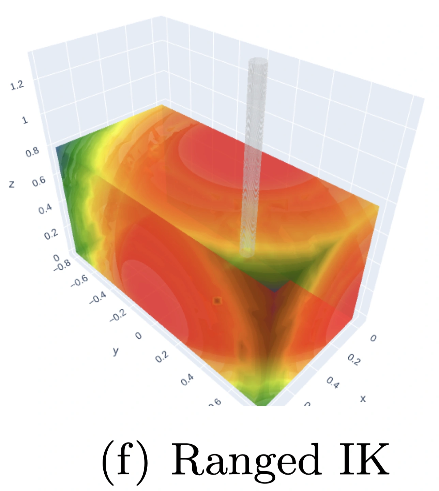
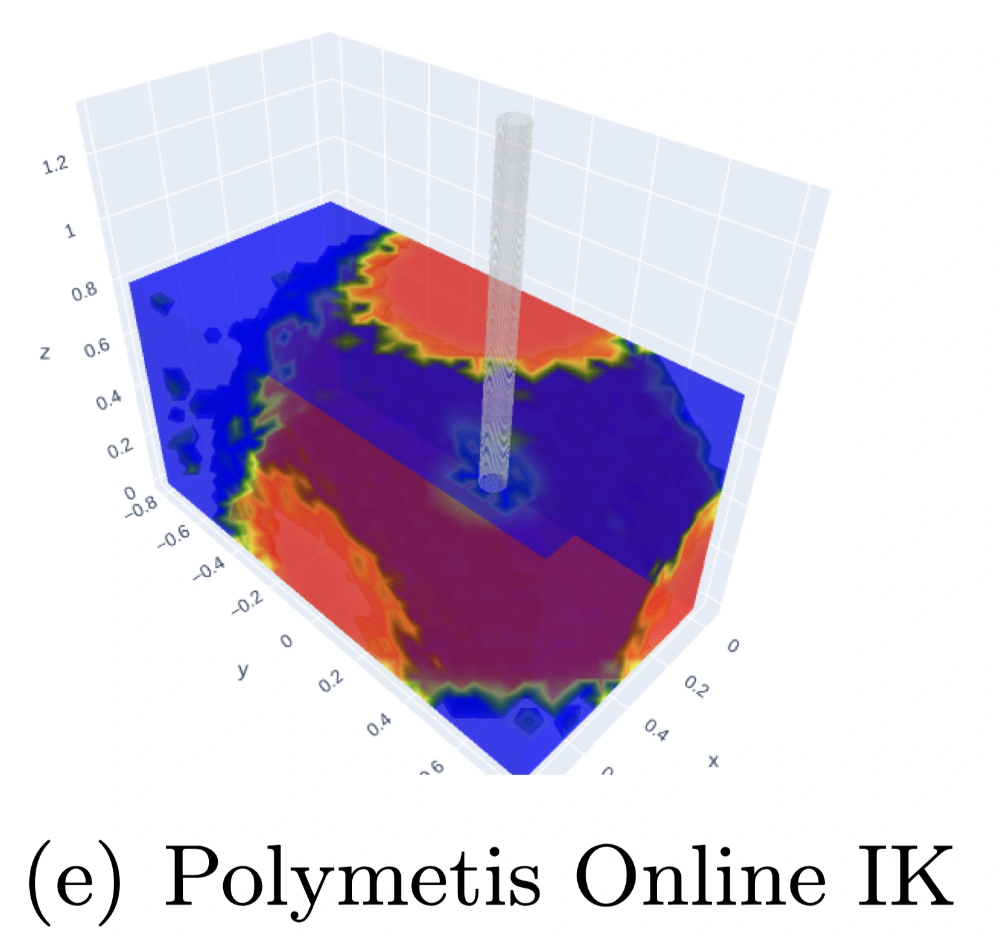
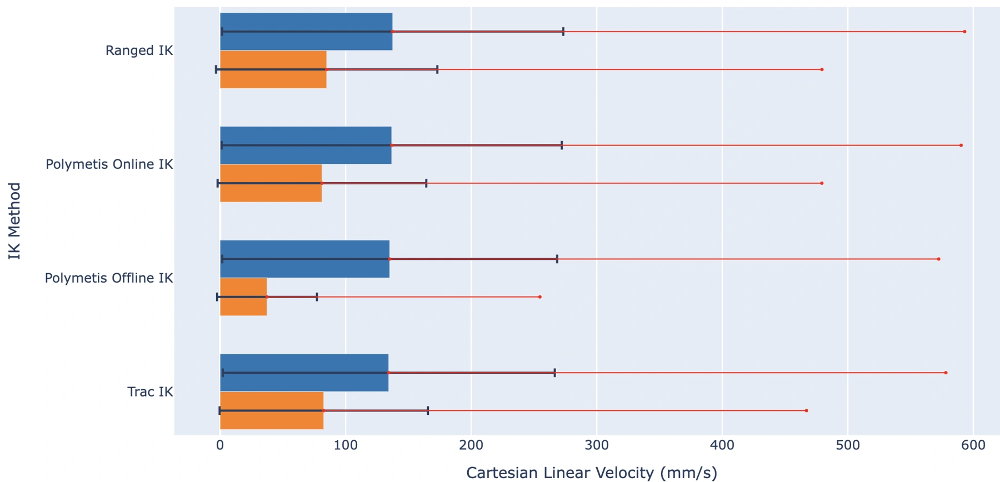

Method at a glance
How it works
- 01Generate target tasksCreate static poses, workspace samples, point-to-point motions, and tracking trajectories.
- 02Run a common benchmarkApply consistent joint limits, pose conventions, and evaluation criteria across solver integrations.
- 03Validate executionTest in simulation first and then validate selected safe methods on the real robot.
Project workflow schematic.
What was compared
The thesis evaluated SimFrame offline and online IK, TRAC-IK, Polymetis offline and online IK, Ranged IK, Frankx IK, and analytical IK. These are geometric or optimization-based control methods, rather than trained neural models. My contribution was the benchmark design, integration and evaluation of the methods, and the analysis of their practical tradeoffs.
KIT’s SimulationFramework supported the point-to-point experiments, while Meta’s Polymetis supported tracking experiments. Simulation provided an initial safety check before selected methods were used on the physical Panda arm.
Benchmark trials in motion
My thesis defense records repeatable MuJoCo trials for position and orientation targets. These clips show the test motions used to evaluate Cartesian-space controllers.
A task-generated evaluation dataset
The benchmark did not depend on an image database. It generated its own evaluation tasks, including 10,000 random target poses, voxel-based workspace samples, changes of position and orientation, multi-speed circular trajectories, and irregular human-generated trajectories. These complementary settings expose differences that a single solver-success statistic would miss.
- Numerical metrics: runtime, position and orientation error, manipulability, and the thesis’s joint-range measure.
- Execution metrics: reachability, motion success, tracking errors, and dynamic time warping for trajectory comparison.
- Robust summaries: interquartile statistics alongside ordinary averages to reduce the effect of large failure cases.
Six complementary experiments
My final thesis defense separates solver computation, point-to-point execution and trajectory tracking. Each experiment tests a different requirement, from finding a valid joint configuration to following a demonstration on the physical robot.
| Experiment | Evaluation inputs | Main question |
|---|---|---|
| Random target poses | 10,000 generated poses | How accurate and fast is the solver? |
| Workspace reachability | 66,785 target/orientation combinations across five directions | Where can each method produce usable solutions? |
| Position reaching | 26 targets in a 3 × 3 × 3 arrangement | Can a computed solution be executed accurately? |
| Orientation reaching | 51 orientations at a fixed position | How do orientation precision and coverage interact? |
| Circular tracking | Reference speeds of 10, 50 and 100 mm/s | How does tracking change with commanded speed? |
| Human demonstration tracking | 30 Hz circling and 10 Hz cabinet-door trajectories | Can the controller follow smooth motion, pauses and abrupt changes? |
Workspace coverage and solver accuracy
The reachability experiment samples five gripper directions and plots position error throughout the workspace. These maps reveal spatial structure that an average error hides: some methods have a compact region of accurate solutions, while others trade a larger usable region for higher residual error. This comparison helps explain why the choice of IK method depends on the intended motion.




What the benchmark showed
The study found that solver behavior depends strongly on the task. An analytical method could be extremely accurate when it found a solution while leaving more poses unsolved. Ranged IK offered a strong overall balance in the thesis’s tested conditions, but the tracking results also showed that the surrounding controller can dominate performance.
Joint-limit handling was another important factor. Methods that returned out-of-range joint configurations required clipping before execution, which could change the end-effector error. The comparison therefore treats solver integration and controller behavior as part of the practical problem, rather than reducing the result to one universal ranking.

Tracking, timing and hardware constraints
For demonstration tracking, I compared a smooth circling motion recorded at 30 Hz with a cabinet-door motion recorded at 10 Hz. The latter includes sudden accelerations and pauses. Dynamic Time Warping aligns the reference and executed trajectories before measuring position and orientation errors; Cartesian velocity provides a separate view of the controller’s behavior.
The defense also distinguishes a correct IK solution from a usable sequence of robot actions. Abrupt changes between solution branches can obstruct motion or create large joint movements. Hardware tests stopped problematic runs, and some analytical motions were executed in segments. The available physical-robot comparisons therefore depend on successful execution as well as numerical accuracy.
The resulting recommendations are task dependent. Polymetis Online IK was a useful option for the tested tracking tasks, while Ranged IK offered a balanced choice across several settings. The surrounding controller and timing remained important sources of tracking error.


Project visuals

Original documents
Project reports, theses and retained presentations in their original language. Presentations are provided as static PDF exports; personal identifiers are removed where necessary.
Related resources
Based on my written bachelor’s thesis and the 75-slide final defense, especially slides 16–17, 27–31, 33–44 and 54–71. Solver-only tests, simulation and physical-robot execution are identified separately; hardware runs did not cover every method under every condition. The added videos preserve the position- and orientation-trial animations on thesis-defense slides 33 and 44.